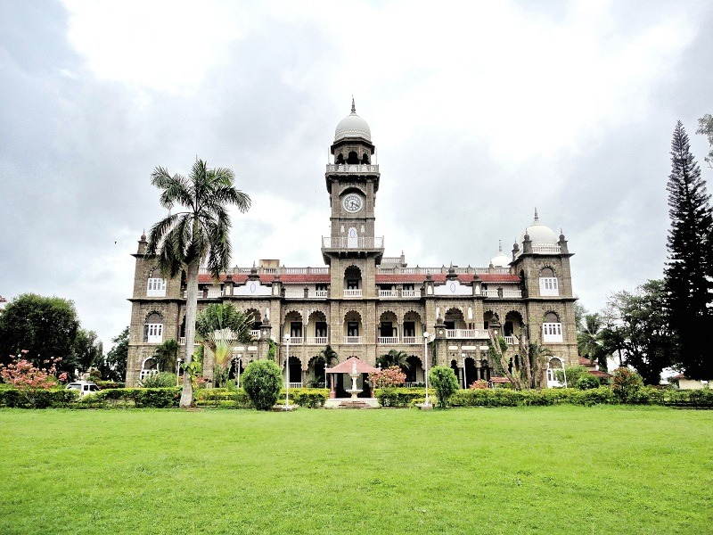

Shalini Palace
Shalini Palace ( Shaalini ) in the city of Kolhapur in the Indian state of Maharashtra was built in 1931–34 at a cost of Rs. 800,000 and was named after Princess Shalini (Shaalini) Raje of Kolhapur. The Palace stands on the west bank of the picturesque Lake Rankala (which has a circumference of 2.5 miles (4.0 km)) and is surrounded by towering palm trees, lush greenery and lovely gardens. The Palace is built of intricately carved black stone and Italian marble. Rich decorative wooden doorways fitted with etched Belgian glass bearing the crest of the Maharaja of Kolhapur, add to the regal grandeur. Majestic black stone arches form the verandah and the porch. The stained glass windows and the huge tower clock are restored to their original beauty.
History
The palace has been converted in 1987 into a 3-star hotel and has been used as a background for many films. Because of heavy losses it had to be shut down in 2014 and given over to the Municipality. It is closed by now (March 2018).